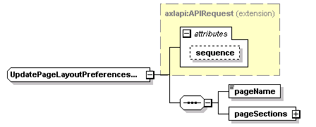
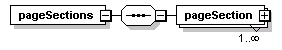
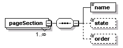

| diagram |  | ||||||||||||
| namespace | http://www.cisco.com/AXL/API/10.5 | ||||||||||||
| type | extension of axlapi:APIRequest | ||||||||||||
| properties |
|
||||||||||||
| children | pageName pageSections | ||||||||||||
| used by |
|
||||||||||||
| attributes |
|
||||||||||||
| source | <xsd:complexType name="UpdatePageLayoutPreferencesReq"> <xsd:complexContent> <xsd:extension base="axlapi:APIRequest"> <xsd:sequence> <xsd:element name="pageName" type="xsd:string" minOccurs="1" maxOccurs="1"/> <xsd:element name="pageSections" minOccurs="1"> <xsd:complexType> <xsd:sequence minOccurs="1"> <xsd:element name="pageSection" maxOccurs="unbounded"> <xsd:complexType> <xsd:sequence minOccurs="1"> <xsd:element name="name" type="axlapi:XWebPageSection" nillable="false"/> <xsd:element name="state" type="axlapi:XWebPageDisplay" nillable="false" minOccurs="0"/> <xsd:element name="order" type="axlapi:XInteger" nillable="false" minOccurs="0"/> </xsd:sequence> </xsd:complexType> </xsd:element> </xsd:sequence> </xsd:complexType> </xsd:element> </xsd:sequence> </xsd:extension> </xsd:complexContent> </xsd:complexType> |
| diagram | |||
| type | xsd:string | ||
| properties |
|
||
| source | <xsd:element name="pageName" type="xsd:string" minOccurs="1" maxOccurs="1"/> |
| diagram |  | ||
| properties |
|
||
| children | pageSection | ||
| source | <xsd:element name="pageSections" minOccurs="1"> <xsd:complexType> <xsd:sequence minOccurs="1"> <xsd:element name="pageSection" maxOccurs="unbounded"> <xsd:complexType> <xsd:sequence minOccurs="1"> <xsd:element name="name" type="axlapi:XWebPageSection" nillable="false"/> <xsd:element name="state" type="axlapi:XWebPageDisplay" nillable="false" minOccurs="0"/> <xsd:element name="order" type="axlapi:XInteger" nillable="false" minOccurs="0"/> </xsd:sequence> </xsd:complexType> </xsd:element> </xsd:sequence> </xsd:complexType> </xsd:element> |
| diagram |  | ||||||
| properties |
|
||||||
| children | name state order | ||||||
| source | <xsd:element name="pageSection" maxOccurs="unbounded"> <xsd:complexType> <xsd:sequence minOccurs="1"> <xsd:element name="name" type="axlapi:XWebPageSection" nillable="false"/> <xsd:element name="state" type="axlapi:XWebPageDisplay" nillable="false" minOccurs="0"/> <xsd:element name="order" type="axlapi:XInteger" nillable="false" minOccurs="0"/> </xsd:sequence> </xsd:complexType> </xsd:element> |
| diagram | |||||
| type | axlapi:XWebPageSection | ||||
| properties |
|
||||
| source | <xsd:element name="name" type="axlapi:XWebPageSection" nillable="false"/> |
| diagram | |||||||||
| type | axlapi:XWebPageDisplay | ||||||||
| properties |
|
||||||||
| source | <xsd:element name="state" type="axlapi:XWebPageDisplay" nillable="false" minOccurs="0"/> |
| diagram | |||||||||
| type | axlapi:XInteger | ||||||||
| properties |
|
||||||||
| source | <xsd:element name="order" type="axlapi:XInteger" nillable="false" minOccurs="0"/> |